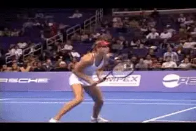
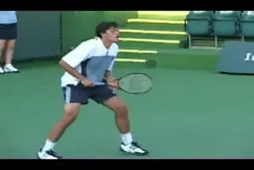
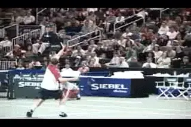
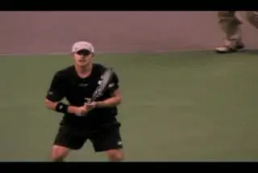
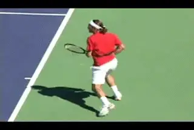
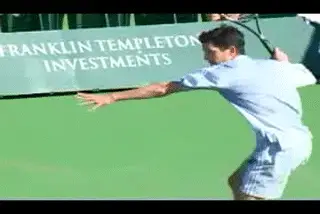
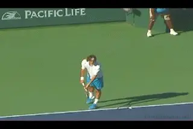

Previous: When Momentum is Totally Against You | 🏠 Mental Game Home | Next: When Momentum is With You
When Momentum is Totally With You
Comprehensive unified tennis knowledge base — Fundamentals, Stroke Analysis, Reference Library, and more
When Momentum is Totally With You
By Alistair Higham
Even when momentum is totally with you, are there things you should do to keep it that way?

In the first article we identified the 5 Stages of Momentum. (See Part 1.) Once we start to understand momentum, we see that every tennis match is always in one stage of momentum or another. If you learn how to identify and react to each momentum stage, you will be able to have more say about which way momentum moves, or even if it moves at all.
In this article let's begin taking a closer look at how you can manage and influence momentum, starting with the first stage: When Momentum Is Totally with You. We'll work our way from there to the other stages when things are less positive and more problematic. But there are still important lessons to learn when momentum seems totally with you, at least if you wish to keep it that way.
When Momentum is Totally with You
When things are going your way it can all seem very easy.
When things are going totally for you, it seems like easy sailing - you can afford to relax a little because you have a cushion. Even if a few things go wrong, you can afford it. You are certain to win sooner or later, right. Can you hear some alarm bells ringing?
There is of course some truth in the statements above. When things are totally with you, you are in control. You feel confident because you are able to do most of the things you try, and your shots and movement seem to require less effort. In addition, your opponent may well be frustrated and is probably showing signs of it. Indeed, later we will see how you can even try a bit of gambling--but first a word of warning.
If your opponent is a player at a similar level, it's very possible that the momentum may swing back in their favor. Occasionally this can happen in a dramatic way. There can be a specific turning point. But more often when the flow is heavily in one direction, momentum shifts gradually back in the other direction. The shift can be subtle at first, but typically it will gather more pace as it moves.
Often times, because it is so gradual, the player who has been winning won't realize what has happened until it's too late. But this gradual, creeping change in momentum can be averted if you know the warning signals and how to deal with them. Specifically, to keep momentum on your side as much as possible you need to know how to:
Recognize and Avoid the Dangers
Prepare to Fight
Understand the Scoring System(it isn't football)
Win the First Point
Watch for a Change in Tactics
Know How You Got There
Step It Up a Gear
Avoid the Dangers
The momentum may switch but at least make sure it's because your opponent gained it, not because you lost it. When the momentum is totally for you, it is crucial that you do not allow yourself to get distracted. This often happens because players are lulled into a sense of false security when things are heavily in their favour. They are playing well, their opponent may be playing badly, and it seems fine to relax and enjoy completing the win.

A few careless errors and suddenly you're frustrated while the match gets much closer.
Be warned! That big gap between your best tennis and your opponent's worst tennis can become increasingly smaller if your opponent starts to play just a bit better and you drop a few careless points here and there. Your opponent then starts to feel better and therefore plays better, while you get frustrated because you know you shouldn't have relaxed, and now you start to play worse. The whole situation can then start to escalate and feed off itself.
Even if you are 5-1 up in the first set and you have won five times as many games as your opponent, do not be fooled by the score - it may not mean you are five times better than your opponent! In fact at 5-1, the Momentum may have already shifted in his favor.
Understand the scoring system (it isn't football or what you Americans call soccer).
If this was a football (or soccer) match and the score was 5-1, then the team in the lead would be easing off, attempting to keep free from injury, saving themselves for the next match, coasting and probably playing relaxed exhibition football.

Unlike other sports, you can't ease off when you have the lead.
But tennis is not like football, where there is a fixed time limit to the match and where a 5-1 lead means almost certain victory. There is no time limit in tennis, and there are potential dangers for the player in the lead because no one can be sure exactly where the finish line is!
Don't be fooled into thinking you've got a bigger lead than you really have. A 5-1 lead suggests you've only got to win one of the next four games, and anyone will do. Statistically that's true of course, but if you play a couple of loose games and your opponent gets encouraged and gains momentum, 5-3 will feel very different, particularly if you've missed a set point or two.
Know How You Got There
If you relax without knowing why you have the lead, you probably won't notice if anything changes, and you are likely to pay a price for your complacency.
Are you winning because you are controlling the tactics, or because you have been winning close games on exchanges or shots that are atypical in the run of play? For example, have you won a critical point on a net cord, a bad call by the umpire or the first big passing shot you hit this year! If any of this is true, then you should be guarding against a flow change because these things are not completely controllable by you. On the other hand, if you got to 4-1 up because of your own tactics and superior play, you can relax a little (but not too much) because you understand why you are 4-1 ahead.

When the momentum starts to turn, you have to be prepared to fight.
Be Prepared to Fight
You have to be prepared to fight to keep your lead. Players who are losing tend to play better. This is because when they are behind, they nearly always relax and play as if they have nothing to lose. They are also likely to change tactics as a last roll of the dice. Nothing focuses the mind like impending doom!
It may seem illogical, but at 5-1 up you must be alert to these possibilities and therefore be prepared to increase your own level of intensity and to work even harder. Fighting spirit is not only needed when you are behind. Sometimes it is more important to fight harder when you are ahead.
It may seem illogical, but at 5-1 up you must be alert to these possibilities and therefore be prepared to increase your own level of intensity and to work even harder. Fighting spirit is not only needed when you are behind. Sometimes it is more important to fight harder when you are ahead.
Win the First Point
Winning the first point of the game is important at any time, but it is sometimes neglected when you are in the lead. When players are losing, they can lose hope quickly. The first point of each game, particularly when you are playing a tired opponent, can encourage or discourage them at a time when they may be clinging onto any last signs of hope before they lose heart.

When you have the lead winning the first point can kill your opponent's hope.
Watch for a Changes in Tactics
Knowing how you got ahead allows you to spot changes in the tactics of your opponent more quickly. You may not know the answer to your opponent's new tactics, but don't be caught, realizing that they have changed only after the match is even.
If your opponent does change tactics, be sure to renew your efforts. Players who are losing, change tactics because they are desperate. Whatever they change to, it is going to be their second choice. Nobody keeps their first choice up their sleeve for an emergency. Therefore, they are unlikely to stick to them for long if your renew your focus and combat them well.
Step Up a Gear
As long as you are aware of everything we've talked about so far, now is the time you can gamble, take more risks and try to step up a gear.

You can try to step it up a gear to finish the match when you have a cushion.
You can use the cushion of a lead to try and kill off the match if it's getting near the end. Or if it's not near the end, you may step up and play so well that your opponent thinks you are invincible, which in turn may have a big effect on the outcome of the match. He may give up more quickly. Some players make it a policy to step up every time they have created some daylight between them and their opponent for just this reason.
Tactically, you can afford to gamble a little. You can go for it - take the ball earlier, hit big returns off first serves, serve and volley if you like. Realize though that it is a calculated gamble and be ready to return to your tactics if you feel things slightly starting to slip.
It's also a good time to vary your game. You are feeling good, so variations are more likely to work. Not only this, your opponent won't realise you vary your game only when the momentum is totally with you, they'll just remember that you may vary it.
The danger here is gambling for too long and giving your opponent cheap points by trying to hit too many winners. Cheap points, of course, are exactly what your opponent wants when he is far behind -- it's easier climbing steep hills with a helping hand.

When momentum is totally with you, experiment to find your potential.
Mentally, you can afford to try to step it up as well. The best way to do this is to relax your mind and allow yourself the freedom of going for your shots. An international junior coach from Croatia once told me: "Talent is inside you. It stays trapped inside when your mind and body are tense. It only can flow out when you are relaxed."
This relaxed state of focus sometimes makes it possible to take your game to higher levels. Many tennis players and athletes have experienced it and it has become known as being in the zone or playing out of your head.
When your mind is clear, you are capable of very high levels of tennis. Just think about how many perfect returns you have hit after you called the serve out. To relax your mind and let things happen when the points are live takes practice and courage, but it can be done.
When the momentum is totally with you, it's a good time to begin learning about this ability to step up a gear and experimenting to find your full potential.

Alistair Higham is the National Manager of Coach Development for the LTA, the governing body for tennis in Great Britain. He is the author of Momentum: The Hidden Force in Tennis. Alistair is a former professional player who continues to compete successfully at the highest levels of English regional tennis. He has developed and coached dozens of top junior players, and traveled extensively on the international junior circuit, where he has had the unique opportunity to make a close study of the hidden force that dictates so much in the outcome of competitive tennis matches.

Momentum: The Hidden Force in Tennis Alistair Higham
Read this important new perspective on momentum and the development of the mental game, by top English coach Alistair Higham. Based on his observation of literally thousands of competitive matches as well as his own professional career, this book will give you the perspective and the tools to create momentum in your own matches and deal with the critical turning points that are the difference between winning and losing.
Click Here to Order!
Source: tennisplayer.net archive — When Momentum is Totally With You .docx (John Yandell teaching library, 2002-2022). Extracted and rendered as HTML for Tennis Future Lab.